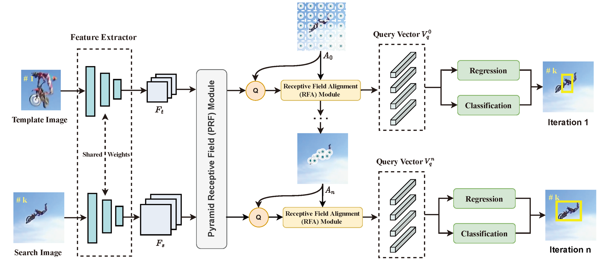
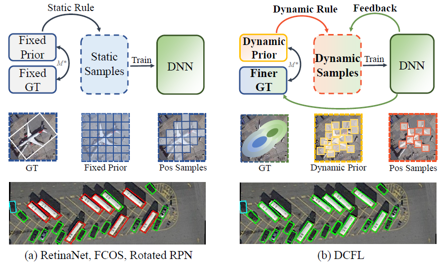
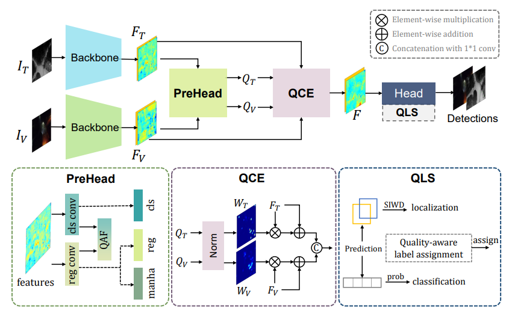
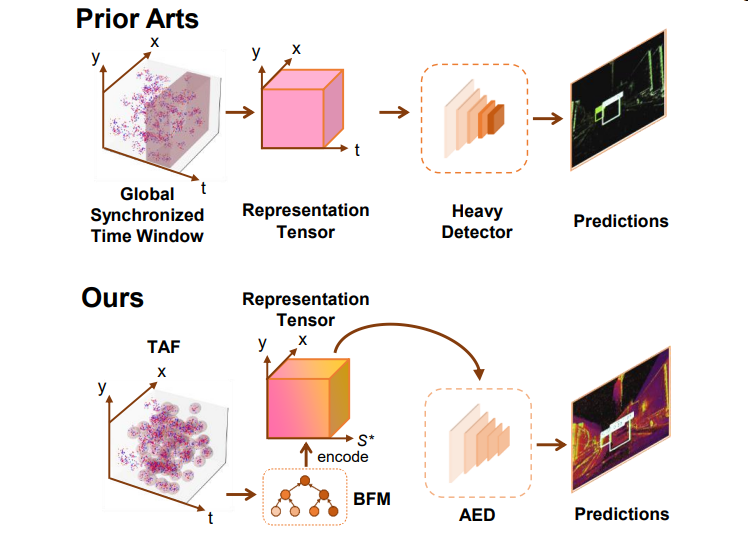
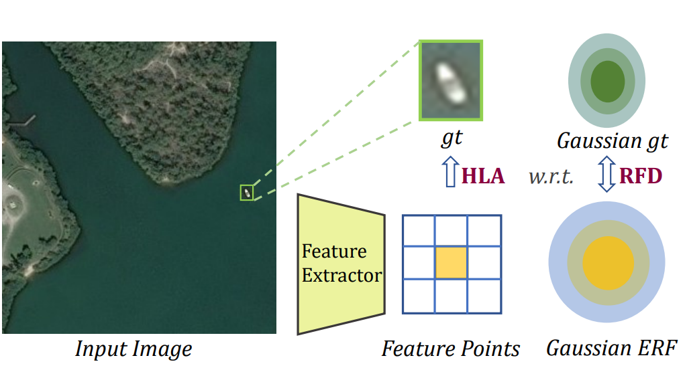
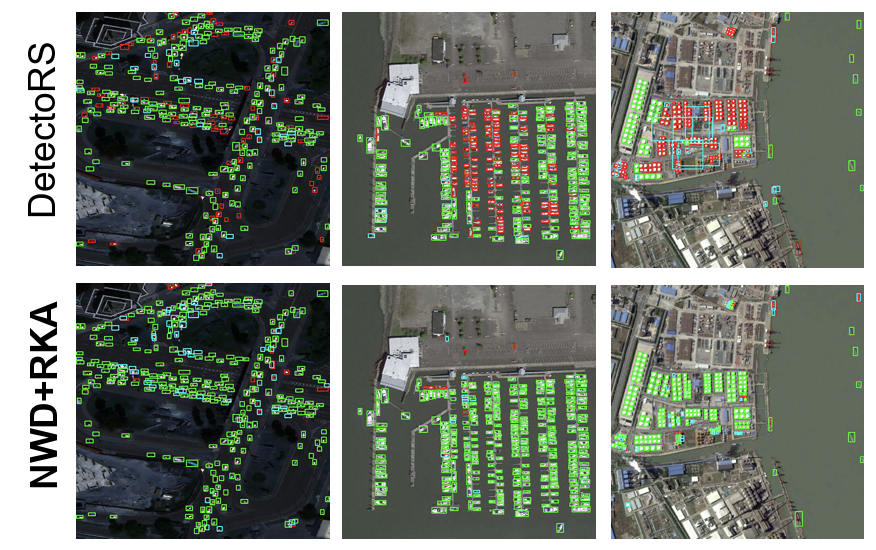
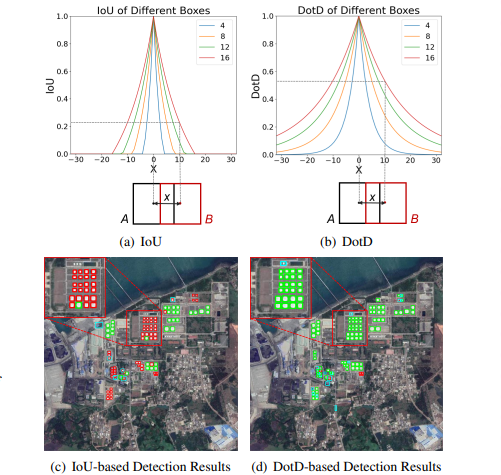

Chang Xu
VIPG Group
Electronic Information School, Wuhan University
Contact: xuchangeis@whu.edu.cn
Github: Chasel-Tsui
Google Scholar: Chang Xu
CV: Chang Xu
I'm currently a master student (2021-) of Electronic Information School at Wuhan University, supervised by Prof. Wen Yang. My research interests include 2D/3D object detection, label noise, event-based object detection, and vision language models.
Recent News
2023
2022
Educations
- Exchange Master Student, 2023
EPFL, Switzerland - M.Sc in Communication and Information System, 2021-
Wuhan University, China - Winter School, 2020
Oxford University, the UK - B.Sc in Electronic Information Engineering, 2017-2021
Wuhan University, China
Selected Publications
(* Equal Contribution)|  |
A3Track: Achieving Precise Aerial Tracking with Receptive Field Alignment. [Paper] [Code] Xu Lei, Chang Xu, Wensheng Chen, Wen Yang, Gui-song Xia. IEEE Transactions on Geoscience and Remote Sensing, 2023.
|
|  |
Dynamic Coarse-to-Fine Learning for Oriented Tiny Object Detection. [Paper] [Code] Chang Xu, Jian Ding, Jinwang Wang, Wen Yang, Huai Yu, Lei Yu, Gui-song Xia. CVPR, 2023.
|
|  |
Drone-based RGBT Tiny Person Detection. [Paper] [Code] Yan Zhang*, Chang Xu*, Wen Yang, Guangjun He, Huai Yu, Lei Yu, Gui-song Xia. ISPRS Journal of Photogrammetry and Remote Sensing, 2023.
|
|  |
Motion Robust High-Speed Light-Weighted Object Detection with Event Camera. [Paper] [Code] Bingde Liu, Chang Xu, Wen Yang, Huai Yu, Lei Yu. IEEE Transactions on Instrumentation & Measurement, 2023.
|
|  |
RFLA: Gaussian Repective Field based Label Assignment for Tiny Object Detection. [Paper] [Code] Chang Xu, Jinwang Wang, Wen Yang, Huai Yu, Lei Yu, Gui-song Xia. ECCV, 2022.
|
|  |
Detecting Tiny Objects in Aerial Images: A Normalized Wasserstein Distance and A New benchmark. [Paper] [Code] Chang Xu*, Jinwang Wang*, Wen Yang, Huai Yu, Lei Yu, Gui-song Xia. ISPRS Journal of Photogrammetry and Remote Sensing, 2022.
|
|  |
Dot Distance for Tiny Object Detection in Aerial Images. [Paper] [Code] Chang Xu*, Jinwang Wang*, Wen Yang, Lei Yu. EarthVision (CVPRW), 2021
|
Awards
- Outstanding Graduate Thesis, 2021
Top 5%
Wuhan University - Hubei Translation Final Contest, 2020
Second Prize
Hubei, China - National Undergraduate Electronic Design Contest (Hubei), 2019
First Prize
Hubei, China